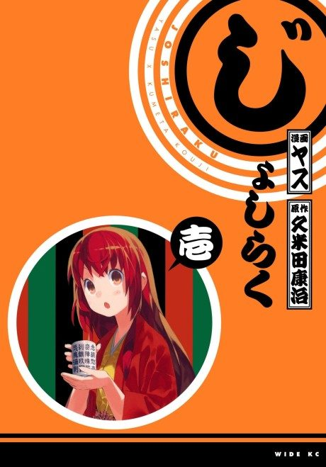
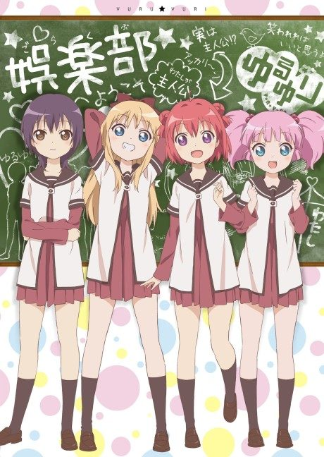

Joshiraku
じょしらく
Five girls who perform rakugo comedy chat about everything and nothing backstage.
We haven't found where the anime ends in the manga yet.
7.3AniList score
—Animeter, no votes yet
13episodes
Rate it or report where you stopped
Watch order
In airing order. Episode numbers on this site count straight through every season, so season 2 starts at episode —.
1
2012 · TV
Joshiraku
Episodes1–1313 ep
Films, OVAs and specials
Not counted in the episode numbers above.
·
2013 · OVA
Joshiraku OVA
Sources: AniList
More like Joshiraku
 Done8.3
Done8.3
 Done7.9
Done7.9
 Unclear7.4
Unclear7.4
 Unclear7.5
Unclear7.5
 Manga Vol. 47.5
Manga Vol. 47.5
 Done8.5
Done8.5
 Manga Ch. 1797.2
Manga Ch. 1797.2
 Unclear7.3
Unclear7.3

Manga Ch. 997.3 Manga Ch. 407.4
Manga Ch. 407.4
Unclear7.0
Pani Poni Dash! Unclear7.3
Unclear7.3